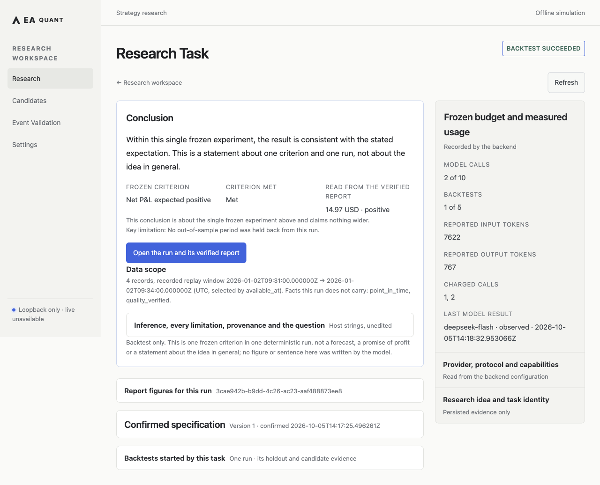

Mac desktop · Unpublished local candidate
One local desktop, from research idea to verified evidence.
QUINE is an AI-assisted quantitative research desktop in development. This candidate delivers one local research loop: an idea, a registered and frozen strict spec, one explicit real backtest, its formal report, one bounded evidence conclusion, and a durable refresh.
Open the supplied Mac desktop candidate normally. The desktop is the sole user entry, release artifact and final acceptance target; no public download is available yet. The deterministic engine works on local files. AI actions use the provider you explicitly configure; saving an idea and reading local reports need no model key. External Paper providers and Live trading remain unavailable.
The workflow
Every step is explicit. Nothing is created, confirmed, run, or concluded without a user action.
- Idea One bounded research idea is recorded durably before any work starts.
- Registered strict spec Review the strategy, instrument, data version, funding/currency and assumptions against the registered catalog. AI proposals name their target, differences and evidence; Apply edits only the draft.
- Frozen spec Preview the experiment and explicitly confirm a local run separately. Frozen inputs remain bound to its report; an unknown outcome is queried through the original request, never blindly resent.
- Explicit real backtest The run executes through the existing deterministic offline engine: funding, risk limits, orders, fills, ledger, reconciliation, audit, and report authorities.
- Formal report A verified report is published for the completed run. The numbers you read come from that report, not from a model.
- Evidence explanation You may explicitly request an explanation grounded in the selected evidence. It does not change formal results or authorize execution.
- Refresh Task status is re-derived from the real started jobs on every read. A refresh never re-confirms, re-runs, or submits anything.
Status
- Local offline research / backtest AVAILABLE
- Apple Silicon macOS desktop UNPUBLISHED CANDIDATE
- Model-backed spec proposal and conclusion AVAILABLE WHEN CONFIGURED
- Mac-local simulated Paper (separate runtime) AVAILABLE
- 72-hour / 7-day Paper soak NO PASS RECORDED
- External Paper provider NOT AVAILABLE
- Live trading DENIED
Model-backed steps are off until a provider is configured. Unconfigured is shown honestly, and deterministic backtests, reports, and simulated Paper stay available without a key.
One honest example

088d4ab. The current UI was verified by reading that same copied, safe
historical report — no extra provider calls or new backtests. The recorded 8 installed-browser
checks are internal shared-code evidence, not native desktop acceptance. Native narrow-window,
full keyboard and Chinese IME remain unverified; publication requires separate approval.
This image is an illustration of one past run — not a profit, robustness, or all-market
claim.
Boundaries the product keeps
- The report remains understandable with AI closed; interpretation does not replace verified evidence.
- Backtest status and conclusion status are separate. A succeeded run without a conclusion reads “conclusion not published” — an empty slot, never an invented conclusion.
- A submission whose outcome cannot be proven stays charged and is never silently retried. Retry exists only for failures that provably spent nothing. There is no fake retry.
- Cancellation is not a rollback. Simulation stop confirmation is separate from cancellation of orders or closing positions; existing work and evidence remain visible.
- Continuous research means repeated independent, explicitly confirmed experiments — not autonomous optimization and not autonomous trading.
- The desktop embeds the shared local service. Independent browser, server and mobile products are not supported; narrow content areas and text scaling remain desktop requirements.
- A strategy artifact is trusted local executable Python, not a sandbox. AI output is not runtime trading authority.
- The public package version remains
0.2.0until the owner decides otherwise. The next version is proposed as0.3.0rc1with tagv0.3.0-rc.1— a proposal only. No tag, registry upload, or deployment has been made.